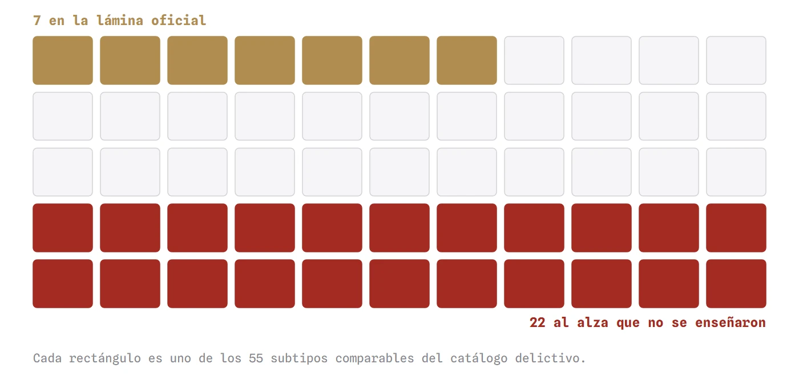
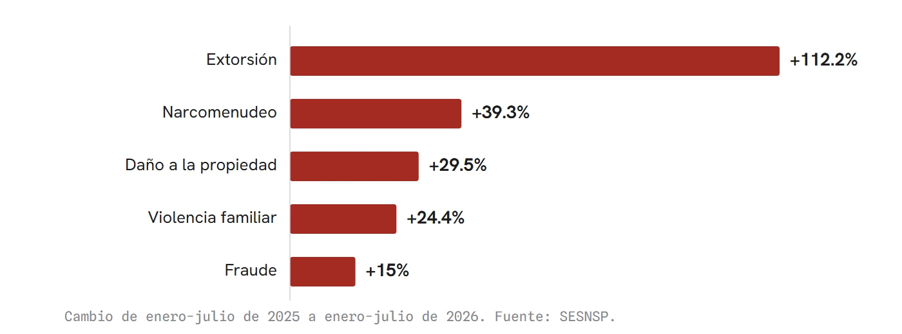
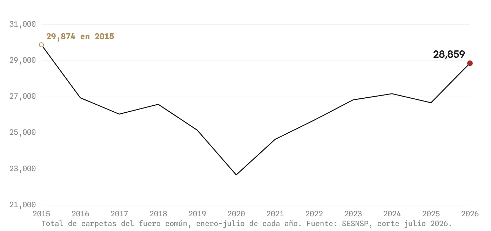
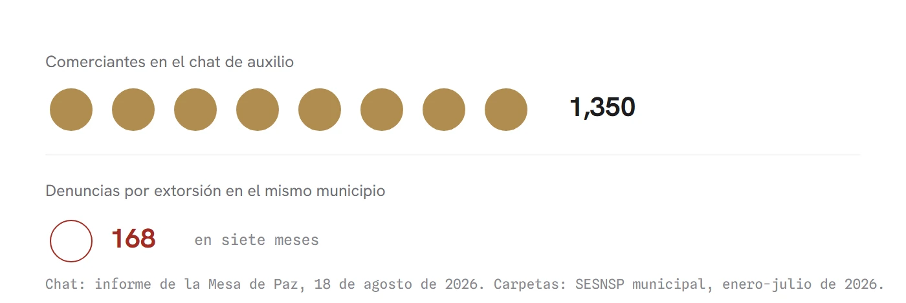

El truco
El informe mensual de seguridad de Morelos presentó siete delitos a la baja y concluyó que hay un cambio de tendencia. Las siete bajas son reales y esta casa las reprodujo una por una, pero el catálogo comparable tiene 55 subtipos: entre los que no aparecieron en lámina, la extorsión sube 112%, el narcomenudeo 39% y la violencia familiar 24%, con 22 delitos al alza y un total de 28,859 carpetas de enero a julio, el arranque de año más alto desde 2015. En la misma conferencia, el subsecretario federal enviado por García Harfuch dedicó dieciséis minutos a describir la emergencia de extorsión en Cuautla, el delito cuya curva nunca llegó a la pantalla.
El 18 de agosto, el gobierno de Morelos dio su informe mensual de seguridad. Setenta minutos de conferencia, transmitida íntegra. En el minuto 64 llegó la lámina estelar: siete delitos a la baja comparando enero-julio de este año contra el anterior, y la conclusión de la vocera: "siete delitos a la baja de forma simultánea implica un cambio en la tendencia".
Fuimos número por número. Las siete bajas son reales. El robo a transportistas con violencia cayó 39%, las lesiones por arma de fuego 32%, el robo de vehículo con violencia 19%. Y la vocera dijo algo más, que también es cierto: "no es una cifra propia, es del Secretariado Ejecutivo del Sistema Nacional de Seguridad Pública".
Tiene razón. Por eso fuimos al Secretariado. Y volteamos el resto de la baraja.
La baraja completa
El catálogo comparable del delito tiene 55 cartas. La conferencia enseñó 7. De las que no salieron en lámina: extorsión, +112%. Violencia familiar, +24%. Narcomenudeo, +39%. Fraude, +15%. Daño a la propiedad, +30%. En total, 22 delitos al alza. Y la suma de todo el mazo: 28,859 carpetas entre enero y julio, el arranque de año más alto de Morelos desde 2015, es decir en once años. Con la fuente de ellos.



Esto tiene nombre y no es mentir. Se llama bluff. En el póker uno no gana enseñando cartas falsas, porque las cartas son las que son: uno gana apostando como si tuviera la mano que no tiene, y logrando que el otro se retire sin pagar por ver.
David Sklansky lo formuló en 1987 en el libro que todavía se estudia en las mesas: cada vez que juegas tu mano distinto de como la jugarías si pudieras ver las cartas del contrario, el contrario gana. Ese es el teorema fundamental del póker, y describe con precisión lo que ocurre entre un gobierno y su ciudadanía cuando el gobierno enseña siete cartas de cincuenta y cinco. No hace falta que nadie mienta. Basta con que usted juegue creyendo que vio la mano.
Esta casa ya documentó en agosto que las láminas de los informes se escogen; lo que el informe del 18 aporta es una partida de manual. Y esta columna es lo único que se puede hacer en la mesa cuando alguien apuesta fuerte: pagar por ver.
El tell
En el póker hay un detalle que delata la mano: el jugador que va de farol se toca la cara, tarda de más, habla de sobra. Le dicen el tell, y casi siempre es involuntario. La conferencia del 18 de agosto duró setenta minutos; el tell duró dieciséis.
El mazo completo estaba sobre la mesa ese mismo día, en las voces de la propia mesa. Estuvo presente el subsecretario José Luis Rodríguez Díaz de León, de la Secretaría de Seguridad federal, en representación de Omar García Harfuch. Habló 16 minutos, casi todos sobre un solo delito: la extorsión.
Un truco no funciona mintiendo. Funciona eligiendo qué miras.
Contó que la Presidenta de la República le dio una primera instrucción al asignarle el caso Cuautla: "trasládate a vivir a Cuautla". Que cada 15 días le rinde informe directo. Que hay un chat de emergencia con comerciantes extorsionados que ya suma 1,350 participantes, donde se atienden llamadas y "papelitos con mensajes extorsivos". Que el rastro municipal pasó cerca de una década cerrado, con el precio de la carne y su distribución controlados mediante extorsión. Que más de 11 dependencias federales participan en un plan específico para ese municipio, con un grupo de inteligencia propio. Que la Presidenta vendrá en menos de tres meses a informar, textualmente, qué pasa con la extorsión en Cuautla.
Antes que él, el secretario de Seguridad estatal informó del traslado de 8 internos a un penal federal de Coahuila porque extorsionaban desde adentro de la cárcel. Y el fiscal especializado enumeró: una célula que extorsionaba transportistas en Cuautla, un líder extorsionador del mercado de la cecina en Yecapixtla, un repunte en Alpuyeca con quema de negocios, la presidenta del DIF de Temoac detenida por extorsión agravada, y hasta el cobro por compra forzada de aguas frescas y gelatinas a los comerciantes del centro de Cuautla.
Todo eso se dijo en la misma conferencia. Delito por delito, caso por caso, municipio por municipio. Lo único que no llegó fue la curva: la lámina de tendencia con la extorsión adentro, la que habría mostrado el +112%, no existió.
Lo que esto no dice
Que quede claro lo que no estoy afirmando. Nadie mintió en esa conferencia: las siete bajas son reales, el homicidio doloso sí cayó 12% en carpetas y 13.5% en víctimas, y buena parte de los casos relevantes presentados son detenciones verificables. Un truco no funciona mintiendo. Funciona eligiendo qué miras.
También hay que decir lo que juega del otro lado. Los datos de 2026 vienen del instrumento nuevo del Secretariado y son preliminares. Parte del alza de extorsión puede ser más denuncia y no solo más delito: la propia mesa presume el 089 y el chat de comerciantes, y más canales producen más carpetas; esa duda la tiene que zanjar la encuesta de victimización del INEGI, que sale en septiembre. Y la comparación anual cruza el cambio de metodología, aunque el propio boletín compara igual.
Hasta la vocera dejó dicho, al cierre, que "la estadística y lo que la gente percibe a veces avanzan en distintos ritmos". Es la frase más honesta del informe. La gente de Cuautla, la del chat de los 1,350, la del mercado y la del rastro, no percibe a destiempo: percibe la carta que no salió en la lámina.
Las dos cifras que sí se pueden juntar
Hay una operación que el informe no hizo y que se puede hacer con sus propias cifras, sin interpretar nada.
De un lado, la que dio el subsecretario: 1,350 comerciantes, empresarios y responsables de unidades económicas inscritos en el chat de auxilio contra la extorsión, en un solo municipio. No dijo que los 1,350 hayan sido extorsionados, y aquí no se afirma: dijo que son los que están en el canal.
Del otro, la que da el Secretariado que ellos citan: en ese mismo municipio, de enero a julio, se abrieron 168 carpetas por extorsión. Veinticuatro al mes. A ese ritmo el año cierra cerca de 288, y el año pasado completo fueron 259.
Ocho comerciantes en el chat por cada denuncia presentada en siete meses. Ni sumando todas las denuncias del año pasado se llega a la quinta parte de la gente que está en ese canal.

Esa distancia tiene nombre técnico, cifra negra, y suele discutirse con encuestas. Aquí no hizo falta: el propio gobierno la midió sin querer. Montó una red de auxilio para 1,350 negocios, y a la fiscalía siguen llegando veinticuatro denuncias al mes. El tamaño de la red revela lo que la lámina no enseñó.
El truco nunca fue mentirte. Fue apostar a que no ibas a pagar por ver. Aquí queda la baraja completa, con la fuente de ellos, y una regla de casa para el próximo informe: cuando alguien apueste fuerte enseñando unas cuantas cartas, pregunte cuántas tiene el mazo.
Abrir el radar completo: estados, municipios y el método a la vista Ver el expediente →
- Mesa de Coordinación Estatal para la Construcción de Paz y Seguridad, informe mensual, 18 de agosto de 2026. Retransmisión íntegra (70 min), Canal 15 — youtube.com/watch?v=2GQqWw9EVT4
- Secretariado Ejecutivo del Sistema Nacional de Seguridad Pública, incidencia delictiva del fuero común, base estatal RNID, corte julio 2026 — gob.mx/sesnsp/acciones-y-programas/datos-abiertos-de-incidencia-delictiva
- David Sklansky, The Theory of Poker: A Professional Poker Player Teaches You How to Think Like One, Two Plus Two Publishing, 1987 (4ª ed. 1999). ISBN 978-1880685006
- 45 Digital Noticias, "El semestre que subió" (4 de agosto de 2026), el mecanismo de las láminas escogidas — sitio de columnas de la casa
- 45 Digital Noticias, "La vuelta en U" (30 de agosto de 2026), la serie completa de extorsión de Morelos 2015-2026 — sitio de columnas de la casa
- Radar de la paz narca, 45 Digital Noticias, método y datos abiertos — 45digitalnoticias.github.io/Inseguridad-Mexico/radar.html
Las ligas van a la vista para que cualquiera compruebe por su cuenta. Si alguna dejó de resolver, escríbenos y la reponemos.
SRVO